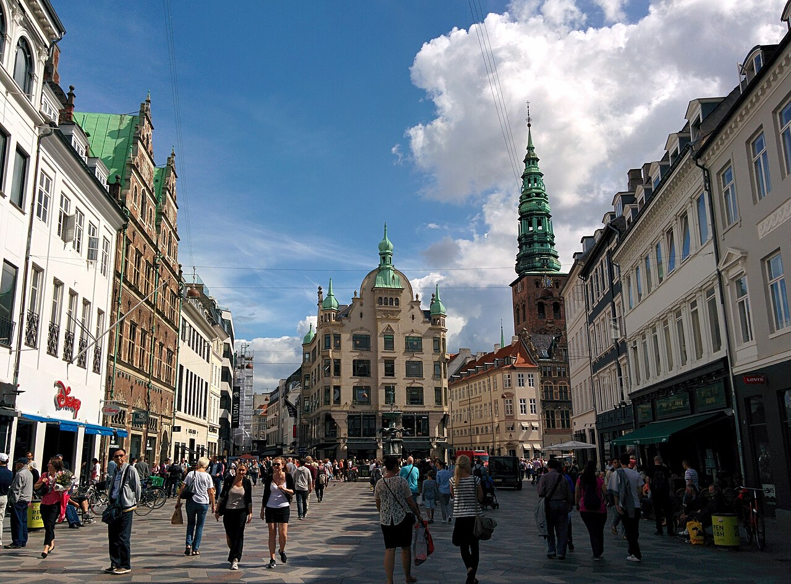

Why Copenhagen?
Copenhagen, the chapmen's haven
Copenhagen, derives its name from Old Norse and Old English roots meaning "merchants' harbour" or "buyer's haven" (Køpmannæhafn), sharing an etymological root with the word chapman (an itinerant dealer or merchant). Multiple finds indicate that Copenhagen originated in the 11th century. The first habitations were probably centred on Gammel Strand (literally 'old shore') in the 11th century or even earlier.
Nowadays, Copenhagen has become the centre of a larger metropolitan area spanning Denmark and Sweden. The Øresund Bridge has brought about considerable changes in public transport and has led to the extensive redevelopment of Amager, Denmark's most densely populated island. The city's service and trade sectors developed and a number of banking and financial institutions were established.